Our Pro Tagonist has awoken! And he's alive! A ratmas miracle!? What happens now?
~~~~~~~~~~~~~

Mi5KL: "Detonate"
Last time Bimpus "detonated" something, weird and bad stuff happened. You don't even have a DETONATOR for anything right now. Just your BROKE TOOTH and PEBBLE
~~~~~~~~~~~~~

slim: you're really gonna have 0 horny points after that long without nutting? yeah fucking right. get more horny points
jalorda: think of daroach da rat to up your horny
Please, there are cuter rat boys than this one. Bimpus can't start getting HORNY until he reaches HUNGER: 0 first. either
~~~~~~~~~~~~~

Juju: survey surroundings
Nothing is all around besides debris. It's quite an amazing sight. There's more space to skitter around than ever in your life. But maybe this amount of space has always existed
~~~~~~~~~~~~~

Pete: Scratch your ear
Yuck, there's weird gooey stuff behind Bimpus's ear. He feels better after a good scratch, feels nice everytime. Bimpus's SANITY goes up by 1 (4/10 => 5/10)
~~~~~~~~~~~~~

Goat: draw face on the pebble
Using the ashes on his fur, Bimpus summons an amiable ally MR. BALBOA! You can issue commands to Mr. Balboa by formatting your commands as Mr: Balboa: [command]. Do note that you can only command one party member at a time

~~~~~~~~~~~~~

Cranby: "Dragon Quest"
:^)
~~~~~~~~~~~~~

Super: jump 30ft above and observe the area
Your SMALL PHYSIQUE and NIMBLE SPEED allows Bimpus to jump 30 feet in the air. This is PROBABLY NOT a realistic jump height height for rats nor is the way this scene is portrayed. The POWER OF FICTION ignores these and allows Bimpus to see from the distance a SQUARE-SHAPED BARRIER SURROUNDING MOUNTAINS OF SOMETHING. Maybe he should check it out, but there's another issue going on this instant:

Bimpus's EVEN SMALLER BRAIN disallowed him to consider that he cannot land safely due to the POWER OF FICTION's bullshit. Will he land safely?!?!?!?!?!!?!?!?!!??
~~~~~~~~~~~~~

Mi5KL: DIE
Doc: Deploy parachute
Slap: Do a flip
Brendan: tuck and roll
Juju: get grabbed by a bird
Bimpus's RAT BRAIN makes it impossible to follow any of these commands, step by step! The next command will determine his fate-
~~~~~~~~~~~~~
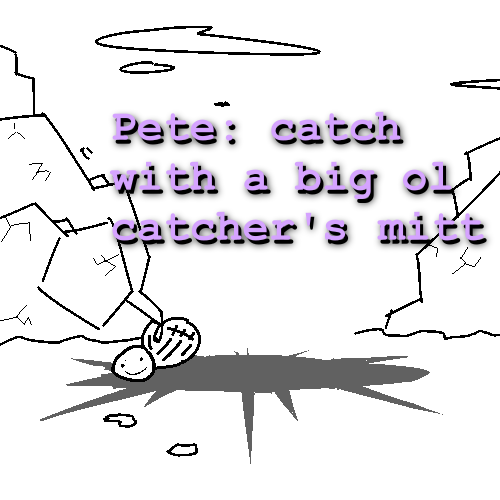
Pete: Mr. Balboa, use catch Bimpus with a big ol catcher's mitt
...
...
...
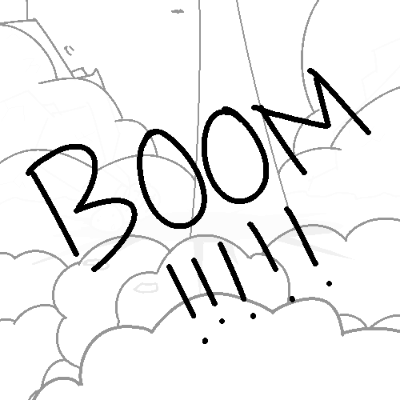
~~~~~~~~~~~~~

Wache: create a comically deep crater
Bimpus is now KO'd. Again. Write-in's are now defaulted to Mr. Balboa until Bimpus wakes up
~~~~~~~~~~~~~
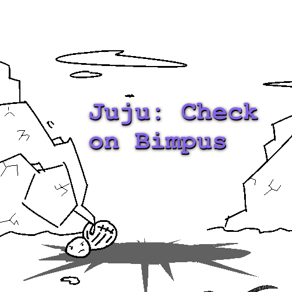
Juju: Check and see if Bimpus is okay
The NIMBLE RAT has just fallen from 30ft in the sky and crashed into the inner layers of the Earth. You think it's time to check if he's okay? That his inner bones are NOT broken into basic cells at this point?? That right now is the perfect time to find out the already obvious???
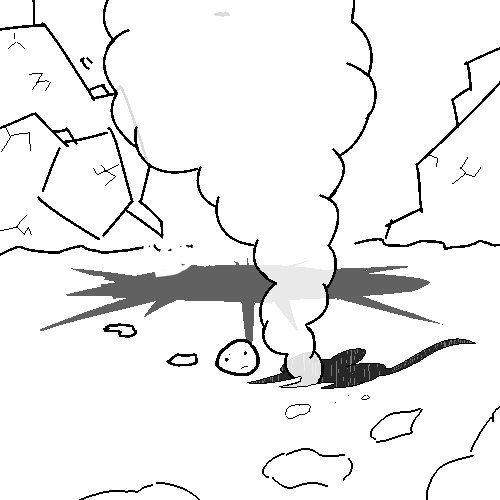
Because yes, it is. Looks like Bimpus got pretty much got POTBUSTED, BUT PROBABLY ALIVE THANKS TO FICTION
~~~~~~~~~~~~~
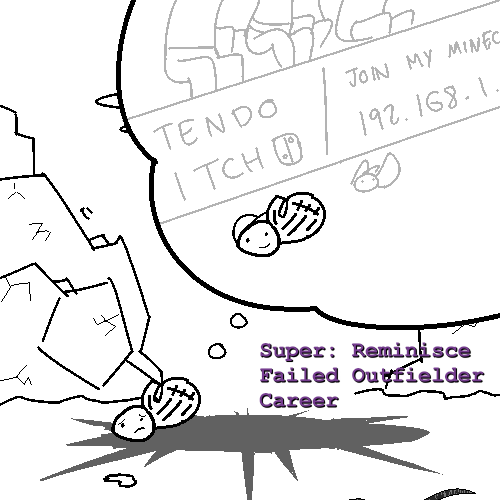
Super: Reminisce about your failed career as an outfielder for the Houston Astros
Balboa never made it to the big leagues. During his university-days, Balboa regretted studying accounting and wanted to get big with baseball. But it was too late, everyone his age was way better at the game than he was. But Balboa guesses it's alright, there are e-girls and esports athletes making more than he would imagine as a PRO BASEBALL PLAYER
~~~~~~~~~~~~~
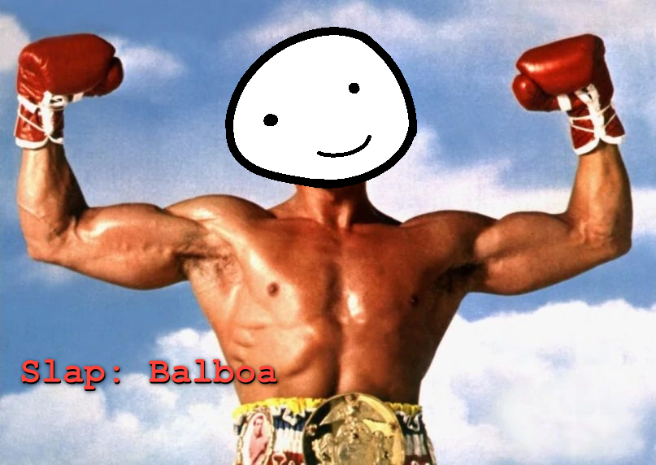
Slap: "Balboa"
~~~~~~~~~~~~~
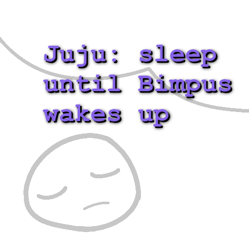
Juju: sleep until Bimpus wakes up
Our TEMPORARY PROTAGONIST has decided there is nothing to do in his current state of an IMMOBILE, INANIMATE BEING, so he dozes off hoping that he will wake up soon. Balboa begins to dream of his HIGH SCHOOL DAYS...
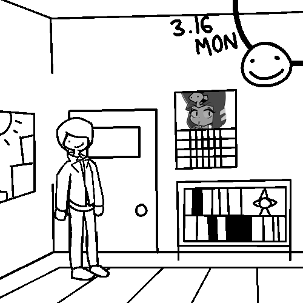
Ah yes, the 16th of March of an irrelevant year, not meant to parallel real life. The day of your SPRING BREAK starts today, meaning you have ALL THE TIME DREAMT UP FOR THE WEEK to do whatever you so please. You can socialize with friends, hang out at the mall or stay inside and do your UNECESSARY SPRING BREAK HOMEWORK your teachers have assigned you. What will you do for today?
~~~~~~~~~~~~~
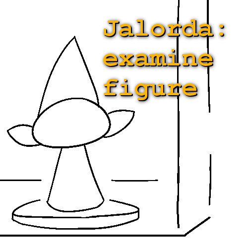
Jalorda: inspect funny object on bookshelf
This old thing? Balboa got it from his dad 2 or 3 years ago when he tried running a startup publishing company on THE WORST BUT PROBABLY ALSO BEST PLACE. Supposedly this ELF FIGURINE was based off him somewhat since his father loved him so much, but the way the story went doesn't sit well in Balboa's head
He'd rather not think about it, it's an awkward unfinished mess. https://boards.4chan.org/qst/thread/2771528
~~~~~~~~~~~~~
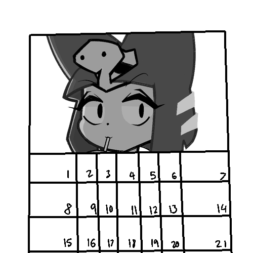
Eggy: inspect Ankha picture
Ah yes, PlayAnkha's yearly calendar. This LUSH, EXQUISITE MAGAZINE COMPANY is dedicated in highlighting the HOTTEST TROPICAL DAME, ANKHA. Men want her, women want to be her... and ALSO WANT HER. There's been some deep rumors going around lately she's some sort of MESSIAH but it's all a bunch of bullshit. Who cares, you think, drooling over this babes AMBROSIANT MANIFESTATION
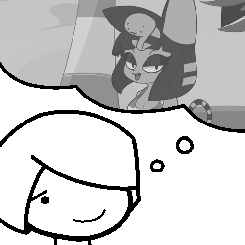
It's a dream, Balboa tells you. It's the best thing ever, going to sleep and thinking about being with her at the beach. It felt like a vacation. Or better yet, it was. Still, the moment he feels JADED, Balboa wakes up from paradise and faces reality. That's ok, that's just the way life goes, because our PARTIAL PRO TAGONIST has to go to sleep every night and meet his sweetheart, kind of like Little Nemo
Balboa whispers to himself: "I need you, Ankha."
~~~~~~~~~~~~~
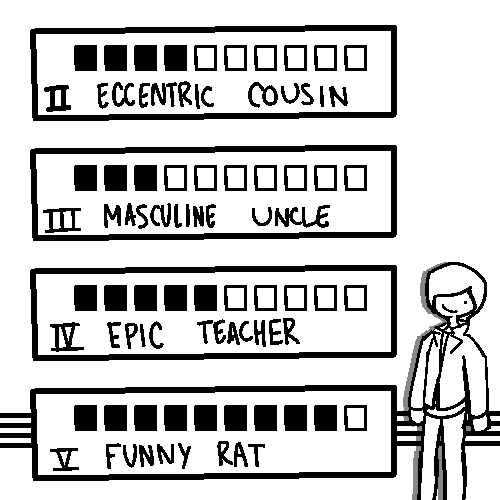
Superfly: check CONFIDANT LEVELS
You open up your LIMITED BUT SOMEWHAT STYLIZED MENU OF CONFIDANTS. Who will you hang out with today?
~~~~~~~~~~~~~
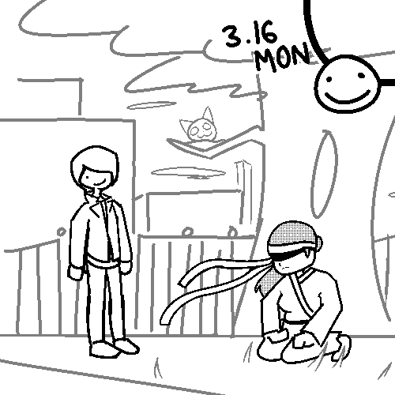
Pete: Go on a date with EPIC TEACHER
It's evening time at the park with Ms. Footsies. You two are SOMEWHAT SEEING EACH OTHER as a secret. No one really knows, maybe not even Ms. Footsies herself. Either way your goal today is to WOO HER for real on this second date. Maybe the funeral house wasn't a good idea, already from the park's environment do you feel there's a CHANCE OF SOMETHING HAPPENING between you two. What do you do?
~~~~~~~~~~~~~
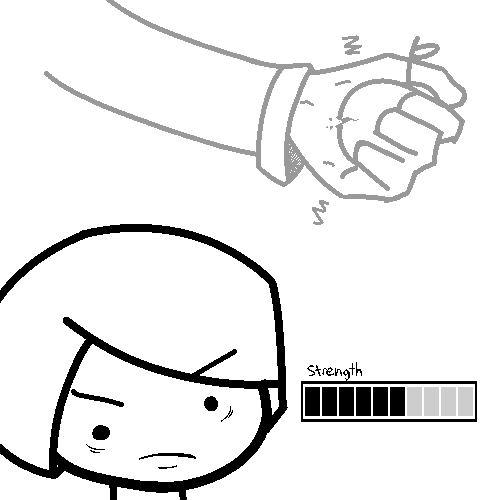
Super: Rip an apple apart with your bare hands
Balboa can do BETTER than that. He grabs an APPLE he apparantly had in his inventory and beings squeezing it until it begins to crack. But the POINT OF TIME in which Balboa is in means he does not have as much STRENGTH as we initially saw
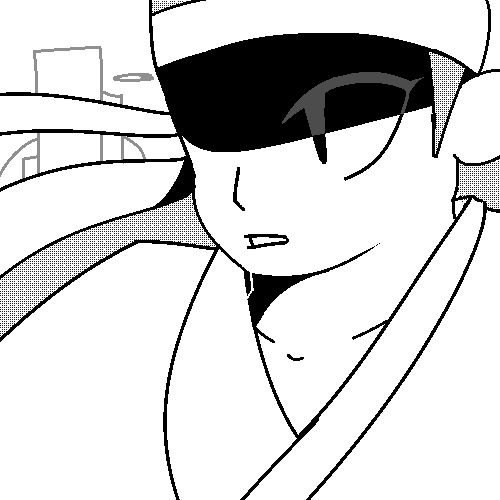
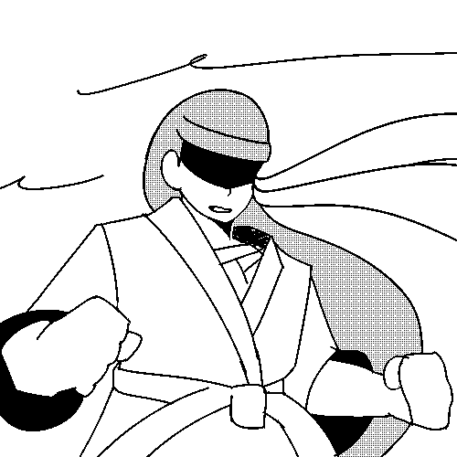
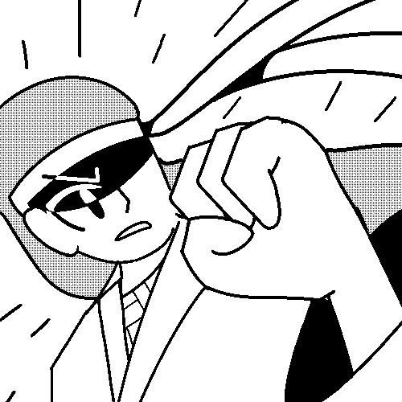
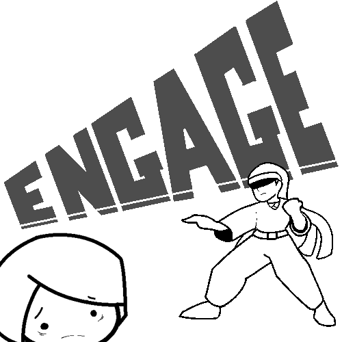
It appears Miss Footsies has taken your gesture as a CHALLENGE AGAINST WARRIORS. How will you FIGHT?
~~~~~~~~~~~~~
Last updated: 04/06/2020